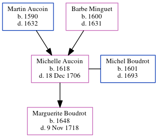

Michelle Boudrot (née Aucoin) 1618 - 1706
[ Home ] | [ Calendar ] | [ Surnames Index ] | [ Census Index ] | [ Family History ]The child of Martin Aucoin and Barbe Minguet, Michelle Aucoin, the 10 times great-grandmother of Michele Copp (née Phillips), was born in La Rochelle, Manche, Basse-Normandie, France in 16181, and was orphaned at the age of 14 following the death of her mother in 1631 and father in 1632.
She married Michel Boudrot (with whom she had 1 child, Marguerite) in Nova Scotia, Canada in 16401
She died on Dec 18, 1706 in Port Royal, , Nova Scotia.
Parents
- Martin was born in 1590
- Barbe was born in 1600
Children
- Marguerite was born in 1648
Citations
- U.S. and International Marriage Records, 1560-1900 Online publication - Provo, UT, USA: The Generations Network, Inc., 2004.Original data - This unique collection of records was extracted from a variety of sources including family group sheets and electronic databases. Originally, the information was deriv
Family Tree
Generated by ged2site. Last updated on Jun 6, 2024